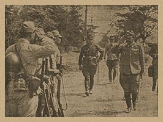

|
j
a v a s c r i p t |
January 28, 1943

Tanaka Tours Taal Lake Region
La Vanguardia: "Laurel sees peace and order in the provinces." The Japanese only wish it were true. "Stalingrad still occupied." Probably the biggest lie so far. KGEI recalled Hitler's speech of 4 months ago: "You may be sure no human being will be able to drive us from Stalingrad." Well, not even the Fuehrer can pull his troops out now, even if he wanted to. At a recent gathering of Axis bluebloods at the Manila Hotel, an almost-drunk Japanese officer approached Max Kummer and asked, "Are you German?" "Yes," answered Max, not knowing whether to beam or bow. "I don't like the Germans," said the defiant Japanese. "Why — anything wrong?" stammered Max. "Plenty," answered the now thoroughly aroused Bushido exponent. "Four months ago you say, maybe three months, no more Russia. Now, maybe two months, no more Germany." Max supposedly broke off the conversation and left in a hurry. |
|
|
|
|